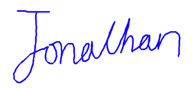

Accurate representation ✅

The traditional practice of wet signatures, involving physical ink and paper, has long been an integral part of legal, business, and administrative workflows. Its validity and attribution are established by comparing copies of signatures and presenting testimony from handwriting experts (Graphical representation) and witnesses present at the signing (Real-time witness). However, in today's digital era, the need for more efficient, secure, and environmentally friendly alternatives has become increasingly apparent. Typed Signature, Scanned Signature, and Drawn Signature are three of the most common e-signature options in today's market. Each of these options, though, lacks one or both of the mentioned criteria necessary for broad acceptance in legal documents such as Wills, Trusts, and court orders.
We present AnySign, a novel form of electronic signature that provides 1) an accurate digital signature representation and 2) real-time signing evidence, with only the need of a i) pen, ii) paper and iii) webcam. AnySign serves as a more secure and legally compliant e-signature alternative that aims to promote the wider use of electronic signatures across various industries and use cases.
The four corners of the customized paper template are automatically detected, and these coordinates are essential for the Homography transform in the subsequent stage.
The user signs in the same way they would with a traditional wet signature, and the entire signing process is recorded by the webcam.
The user defines the region-of-interest, typically around the pen-tip, to be tracked.
The tracked results will be translated with Homography transform to obtain the final digital signature.
Tracking will pause when the pen is detected to be lifted. This is accomplished through the use of shadowing.
A custom paper template enables the quick and accurate detection of the 4 paper corners.
This project is developed during my 2023 summer internship at Hong Kong Monetary Authority (HKMA).
Special thanks to my supervisor Mr. CHOY Ding Yin, Terence for his invaluable guidance and support throughout the project.